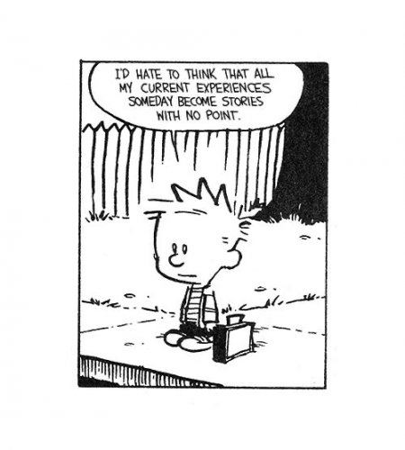

--Alan Watts
“Nothing happens next. This is it.”
--Zen saying
In your life wanderings, maybe you've personally experienced or encountered the idea that, This is it.
As in, This is all there is.
This still-so-much-work-to-do imperfect life with pain and suffering and not enough safety or health or money or love or enlightenment and far too much fear and sadness and guilt and not knowing what to do.
Ugh.
This better not be it.
And then, ever notice what comes next? After, "This is it?"
“Well what’s the point?” is what comes next.
Yay! There it is. My favoritest question. The one that’s going to help me afford my yacht.
“What’s the point?” as in, “If this is it and I can’t get what I want and only what I want, then why be here at all? Why not take my ball and go home?”
If this is it then what’s the point of existing, amIright?
It’s a tantrum really.
A tantrum of “Don’t like!” in answer to, This is it.
Making the timing of the question kind of interesting.
Because as soon as you start to see that there’s nothing more than this,
something asks for more,
anyway.
A point. Gimme a point in addition to this.
Meaning This is NOT it.
Nice. Well played.
Conveniently, distractingly, diverting attention from This is it to, “This is it?”
As in, “Shouldn’t there be a better It?”
When you ask this question, you are saying, “Shouldn’t the point of life be to have a better-liked life, a better-liked me, and better-liked (by me) others?”
You are saying, “Shouldn’t the focus be on the Me- what I am, what I want, what needs improvement, what I do or don’t control?”
Keeping attention on the not-enoughness of life.
And keeping the self center-stage and important.
As opposed to being an undistinguished and undistinguishable part of the amorphous, everywhere, equal-opportunity-attention It.
Perhaps that’s the handy self-serving point of thinking you need a point.
Meanwhile, joy, hardship, terror, love, anger, shame, laughter, and loneliness continue.
Consciousness seems to have no preference for any particular type of experience.
There’s no favoring of happy over fear, no preference for contentment over lack.
Which perhaps may be the truer point.
To experience all of it.
Whether liked by some particular human or not.
So perhaps the question might better be, “What isn't the point?”
Since nothing has a point, and everything has a point.
Making needing a point,
pointless.
Luckily, in actuality, no one really cares. No one lies on their deathbed saying, “But I never found the point of life.”
Which may be good to remember next time mind starts to pout about not having a point.
So is this all there is?
The only possible answer to that question is YES.
There can be no more Thisness than This.
This is indeed It.
There is no other It.
Existence is pointless, pointed, and all inclusive.
And what’s my point?
Oh my friend, surely you know by now
I don’t have one.
--Watch Judy on Buddha at the Gas Pump
--Watch Judy and Shiv Sengupta discuss spiritual anarchy
--Click to watch Judy and Walter Driscoll have fun chatting about about nonduality, the self, consciousness, awareness, free will and other light and breezy stuff
--Watch Judy and Robert Saltzman talk nonduality
"This very moment, this very world, this very body is the point. Now. You see? But, if you’re seeking something beyond all the time, you never get with it. You’re never here…
THIS- the immediate and present experience- is IT, the entire and ultimate point for the existence of a universe.
Of what use is the universe? What is the practical application of a million galaxies?”
--Alan Watts
“This is it, kid. This moment is all there is."
-- Jacqueline Wood
“You are alive, so be fully alive."
--Wendy Egyoku Nakao
